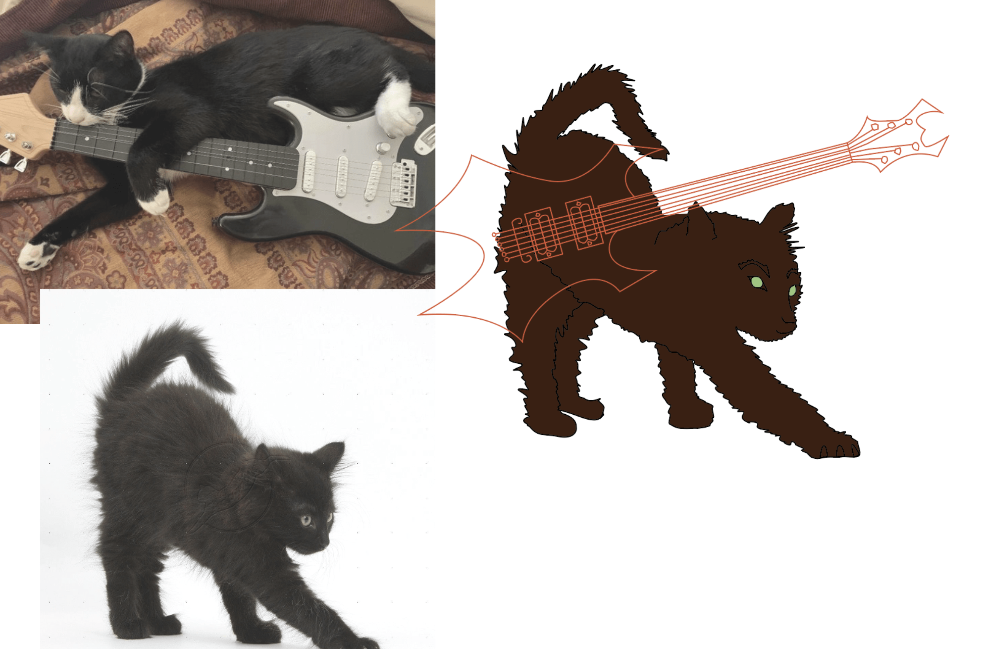
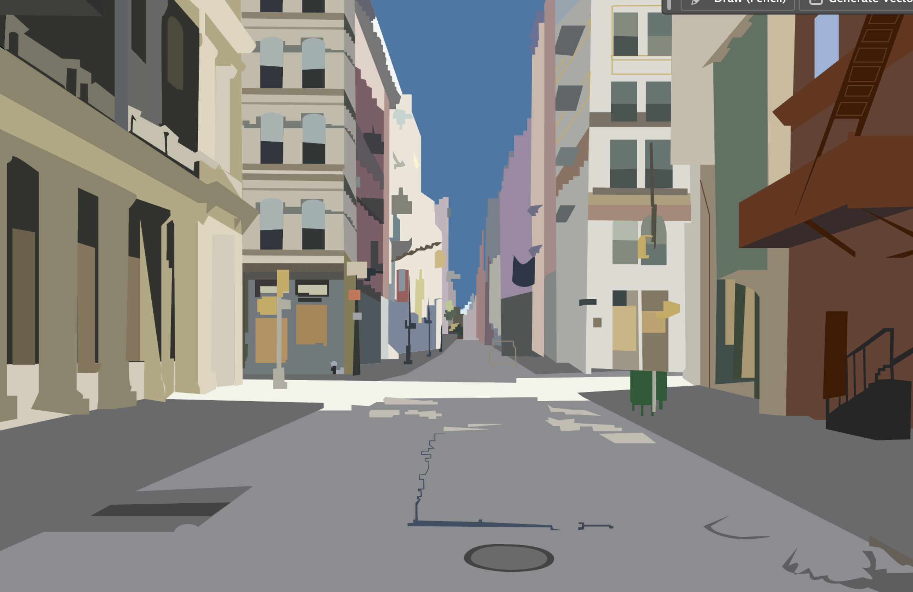

Experimental Media
Ziggy The Rockstar Cat

An original character illustration; ‘Ziggy’, carrying his guitar ‘Stardust’ (a nod to David Bowie). His favorite song to cover on the guitar is ‘Fake Plastic Trees’ by Radiohead. Ziggy is on his way to an evening performance gig near Canal Street in NYC.
An exploration of character personality through pose, color, and urban environment design.
Process

